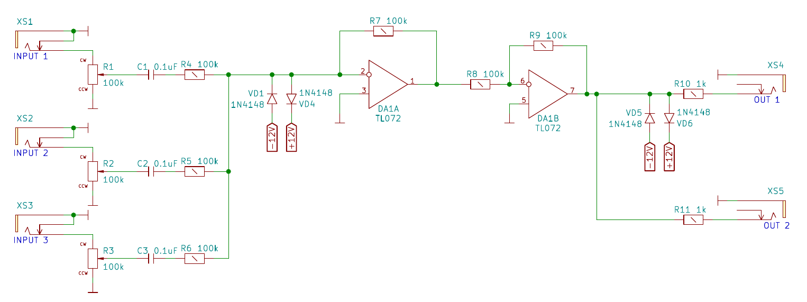

Analog Computers
Today I want to speak about analog computers. In todays times analog computers are leading a shadowy existence, compared to their digital counterparts. But they are wonderous little machines. And that machines I mean wordly because there exists analog mechanical computers that are models from the world and used to compute and predict tides in certain areas of the world . Also the brain is an enourmous analog computer with a comparatively very small enery budget. It only takes 12 Watt. 12 Watt; that is not even a quarter of the power supply budget of a laptop, which uses 65 Watt. And you can do very heavy lifting with the brain, but back to topic. I want to talk mainly about analog electronic computers, during the world war two those were used to compute ballistic curves. So analog computers can sum up, multiply, divide, integrate and differentiate like their digital counterparts.
Sum up
To sum up different signals, we can use an op-amp in an inverting wiring, that just sums up the signals on its inputs. As it is inverting we need a second op-amp to add behind to get the right signal at the end. The same circuit is used as a mixer circuit for audio signals, from which I also bought the photo.

Multiply
To create an analog multiplier we are using a trick here, by transforming the input signals into the logarithmic space summing up the result and transforming it back to the linear space. Mathematically speaking we do the following
\[c= a*b = alog( \log(a) + \log(b))\]
Below you can see the according schematic: The first stage at the inputs are both logarithmic amplifiers, you can see the feedbacking diode between output and non-inverting input. Then we see a simple adder circuit ( an inverting amplifier, with a sum-up node before). And lastly we have an antilogarithmic amplifier, putting the signals back into the linear space. Be aware that the output is actually inverted and we need an additional inverting amplifier to correct the resulting signal.

To be continued…